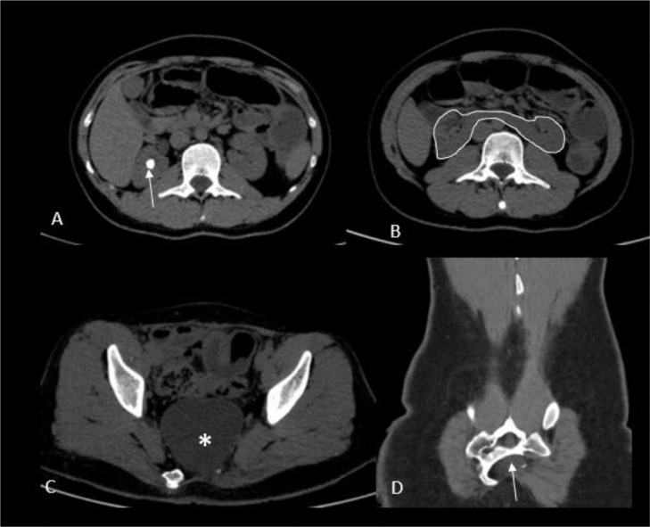
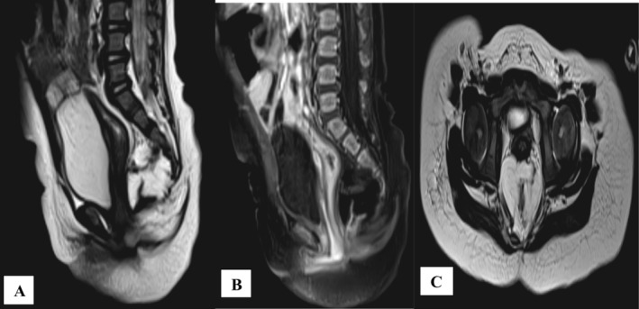
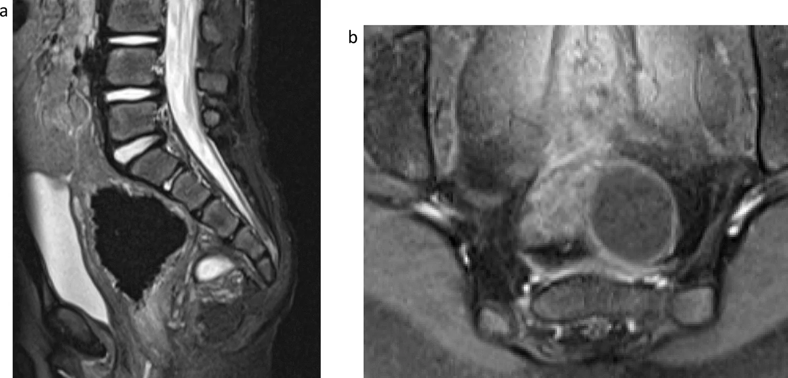

1854 — Màng não tủy trước cùng & tam chứng Currarino ở trẻ / Anterior sacral meningocele & Currarino syndrome
Tags: pattern:khoi-truoc-cung pattern:nang-dich pattern:di-tat-hau-mon pattern:khuyet-xuong-cung pattern:bat-san-xuong-cung vung:mong-cung-cut vung:chau vung:tuy-song vung:hau-mon-truc-trang protocol:MRI-chau protocol:MRI-tuy-song protocol:CT-xuong protocol:CT-tuy-myelo score:Rintala score:Krickenbeck
Mức chắc chắn (certainty): tổng hợp y văn (literature synthesis) — một tổng quan di truyền hệ thống (Orphanet J Rare Dis 2021, PMC8034116), một đoàn hệ 15 trẻ + gộp 89 bệnh nhân về kết cục chức năng (Transl Pediatr 2026, PMC13263440), ba ca nguyên văn có ảnh (PMC9218298; PMC13415978; PMC13658381), hai ca/series phẫu thuật (PMC13201954; PMC13658381) và một tổng quan ca về hội chứng (PMC13221596). Không có thử nghiệm ngẫu nhiên; các ngưỡng mổ/theo dõi là thực hành đồng thuận, chỗ suy luận được ghi rõ.
Câu chốt: khối trước xương cùng ở trẻ + khuyết xương cùng hình lưỡi liềm + dị tật hậu môn–trực tràng (ARM) = tam chứng Currarino; nhưng tam chứng đầy đủ chỉ ở một phần bệnh nhân — tới một nửa có biểu hiện không đầy đủ và dễ bị chẩn đoán muộn tới tuổi vị thành niên/người lớn (PMC13415978). Ba số quyết định: (1) khối trước cùng gặp 60–80% ca Currarino, hay nhất là màng não tủy trước cùng (ASM) (PMC13415978); (2) MNX1 (7q36.3) dương ở ~92% thể gia đình và ~32% thể lẻ tẻ (không phát hiện đột biến ở 7,7% gia đình và 68% lẻ tẻ) (PMC8034116); (3) túi thông với ống sống — chọc hút/sinh thiết qua trực tràng hoặc âm đạo có thể gây viêm màng não, và mục tiêu mổ là bịt thông dịch não tủy bằng khâu kín nước (PMC13201954; PMC13415978).
1. Tổng quan bệnh học – cơ chế hình ảnh (TẠI SAO)
1.1 Phôi thai học: vì sao ba dị tật đi cùng nhau
- Chồi đuôi (caudal eminence) và dây sống (notochord) phát triển trong tuần 4–7, đồng thời tách ống thần kinh khỏi ruột sau (hindgut). Rối loạn mô hình hóa lưng–bụng (dorsal–ventral patterning) ở vùng này làm không tách hoàn toàn nội bì và ngoại bì thần kinh → cùng lúc sai xương cùng, ống sống cuối, và hậu môn–trực tràng (PMC8034116; PMC13221596).
- Gen chính: MNX1 (HLXB9) tại 7q36.3 — yếu tố phiên mã cần cho tế bào thần kinh vận động và tụy, và cho đóng ống thần kinh sau + phân vùng ruột sau. Đột biến MNX1 di truyền trội trên nhiễm sắc thể thường, độ thấm không hoàn toàn, biểu hiện biến thiên — nên cùng một gia đình có người chỉ táo bón, người có tam chứng đầy đủ, người hoàn toàn không triệu chứng (PMC8034116).
- Vì sao xương cùng hình lưỡi liềm ("scimitar sacrum"): thiếu một bên thân/ cuống đốt cùng ở đoạn dưới tạo bờ cong lệch một bên trên phim thẳng — khác bất sản toàn bộ dưới S2 ở thể nặng (PMC8034116). Trên CT, đây là khuyết xương bờ trước của ống cùng, đúng chỗ túi màng não thoát ra.
- Vì sao có màng não tủy trước cùng: ống cùng không đóng hoàn toàn ở phía trước → màng cứng và nhện lồi qua khuyết xương vào khoảng trước cùng, thành mỏng, chứa dịch não tủy, và thường còn thông với khoảng dưới nhện. Chính sự thông này quyết định toàn bộ biến chứng: nhiễm trùng đi ngược lên màng não, rò dịch, đau đầu do hạ áp lực nội sọ.
1.2 Phân loại khối trước cùng — vì sao phải phân biệt trước khi chọc
- Màng não tủy trước cùng (ASM): hay gặp nhất, tín hiệu dịch não tủy đồng nhất trên mọi chuỗi xung (T1 tối, T2 rất sáng, FLAIR tối), thành mỏng không ngấm thuốc, có cổ thông qua khuyết xương.
- U quái trưởng thành (mature teratoma): hỗn hợp mỡ (T1 sáng, mất tín hiệu trên fat-sat) + nang + vôi hóa + mô đặc ngấm thuốc; chiếm tỉ lệ đáng kể sau ASM (PMC13415978).
- Nang ruột (enteric cyst) / nang đuôi ruột (tailgut cyst) / nang bì–biểu bì: tín hiệu dịch không đồng nhất, có thể tăng đậm độ trên T1 do protein/máu, không thông ống sống.
- Điểm mấu chốt: không có dấu hiệu nào trên siêu âm đủ để loại trừ thông ống sống — phải MRI và, khi cần, CT tủy (CT myelography) để chứng minh cổ thông (PMC13201954; PMC13415978).
- Vì sao nguy hiểm: khối nằm sát trực tràng/âm đạo, thành mỏng, nhiễm khuẩn từ lòng ruột/âm đạo đi thẳng vào khoảng dưới nhện. Tổng quan 2026 ghi chỉ 6 ca vỡ màng não tủy trước cùng trong y văn nhưng vỡ thường gây viêm màng não và có thể tử vong, và nguy cơ tăng rõ khi chọc hút/sinh thiết qua trực tràng hoặc âm đạo (PMC13201954).
1.3 Dịch tễ và di truyền — con số để tư vấn
- Tần suất ước tính 1–9/100.000 (PMC13263440); trước 2020 < 250 ca được báo cáo (PMC7341113, 2020) — tức đây là bệnh cực hiếm nhưng không phải "không gặp".
- Giới: gộp dữ liệu > 60 nghiên cứu cho nữ:nam 1,39:1 (PMC8034116); thể không gia đình có thể tới 3:1 (PMC13221596).
- MNX1: phân tích đột biến thành công ở 57,4% tổng số bệnh nhân được xét nghiệm; không tìm thấy đột biến ở 7,7% thể gia đình và 68% thể lẻ tẻ (PMC8034116) → MNX1 âm không loại trừ Currarino, và còn gen/ vùng điều hòa khác chưa biết.
- Dị tật Müllerian đi kèm tới 15% (PMC13221596; PMC8034116) — tử cung đôi, vách âm đạo, bất sản tử cung/âm đạo; ở bé gái có ARM phải chủ động tìm.
- Dị tật ống thần kinh được đề nghị coi là "thành phần thứ tư": dây chằng tận (filum) dày, tủy bám thấp (tethered cord), mỡ tủy, nang thần kinh–ruột (PMC8034116) — giải thích vì sao bắt buộc MRI toàn bộ ống sống, không chỉ vùng cùng.
- Nguy cơ ác tính của u quái: trong u quái trước cùng của Currarino, sống không ác tính 2 năm 100% so với 58% ở u quái cùng–cụt thông thường (Dirix, dẫn qua PMC8034116) — nguy cơ thấp hơn nhưng không bằng 0, có ca ác hóa cả ở trẻ em.
2. Mẫu hình + chẩn đoán phân biệt theo vị trí (gamut)
- Khối dịch trước xương cùng + khuyết xương cùng bờ trước + ARM: Currarino/ASM — gamut chính; hỏi thêm táo bón mạn, tiểu khó, đau đầu tư thế.
- Khối trước cùng có mỡ/vôi hóa: u quái trưởng thành, nang bì, nang đuôi ruột; phân biệt với u quái cùng–cụt (thường ra ngoài da, không có khuyết xương bờ trước).
- Khối dịch trước cùng ở bé gái: phân biệt nang buồng trứng, nang cạnh buồng trứng, áp-xe túi cùng, nang niệu rốn (ở trước bàng quang, không phải sau trực tràng), thận lạc chỗ.
- Bất sản xương cùng đơn thuần: phân biệt hội chứng thoái triển đuôi (caudal regression) — thường kèm đái tháo đường mẹ, dị tật chi dưới, niệu–sinh dục, không có khối trước cùng; VACTERL — không có khối trước cùng đặc trưng.
- Khối vùng chậu + đau đầu tư thế: nghĩ ASM đã vỡ/rò dịch não tủy — cấp cứu, phân biệt hạ áp lực nội sọ tự phát và rò dịch não tủy sau chấn thương.
- Gợi nhớ "CURRA": Caudal (bất sản xương cùng), Underlying MNX1, Rectal malformation, Retrorectal/presacral mass, Associated tethered cord + Müllerian anomaly.
3. Bảng so sánh phân biệt (ma trận đối chiếu)
| Thực thể (entity) | Hình ảnh điển hình | Chốt vào (rule-in) | Chốt loại (rule-out) | Gợi ý xác nhận |
|---|---|---|---|---|
| Màng não tủy trước cùng (ASM) | Nang tín hiệu dịch não tủy đồng nhất, thành mỏng, cổ xuyên khuyết xương cùng bờ trước | Cổ thông với khoảng dưới nhện (MRI/CT tủy) + khuyết xương bờ trước | Thành dày ngấm thuốc, không có cổ → nghĩ u/nang khác | MRI T2 sagittal + CT tủy khi cổ không rõ |
| U quái trưởng thành | Mỡ (T1 sáng) + nang + vôi hóa + mô đặc, có thể thành phần ngấm thuốc | Mỡ/vôi hóa trong khối + AFP/β-hCG bình thường | Nang thuần dịch đồng nhất, không mỡ/vôi → ASM | MRI ± CT; AFP, β-hCG; mô bệnh sau cắt |
| Nang đuôi ruột (tailgut cyst) | Nang đa thùy, tín hiệu không đồng nhất (protein/máu), không mỡ | Vị trí trước cùng + không thông ống sống + không mỡ | Có mỡ/vôi hóa → u quái; có cổ thông → ASM | MRI; mô bệnh (không chọc qua trực tràng) |
| Nang bì/ biểu bì | Nang T1 tăng do keratin, có thể vôi hóa, không mỡ | Keratin T1 sáng + không ngấm thuốc | Mỡ thật (mất tín hiệu fat-sat) → u quái | MRI fat-sat; mô bệnh |
| Nang buồng trứng | Nang xuất phát từ buồng trứng, đẩy trực tràng ra sau | Có mô buồng trứng bình thường cùng bên, không dính xương cùng | Khuyết xương cùng + cổ thông → ASM | Siêu âm + MRI; theo dõi chu kỳ |
| U quái cùng–cụt | Khối cùng–cụt, thường có phần ngoài da, không khuyết xương bờ trước | Khối ngoài da + xương cùng nguyên vẹn | Khuyết xương + khối trong khoang trước cùng → Currarino | X-quang/CT xương cùng; AFP |
| Thoái triển đuôi (caudal regression) | Bất sản xương cùng, không có khối trước cùng, hay kèm dị tật chi/niệu | Bất sản xương + mẹ đái tháo đường + dị tật đa cơ quan | Có khối trước cùng → Currarino | X-quang/CT; MRI tủy; siêu âm thận |
| Rò/ vỡ ASM (biến chứng) | Nang xẹp, dịch quanh, đau đầu tư thế, có thể viêm màng não | Đau đầu tăng khi đứng + dịch não tủy quanh khối + sốt/cứng gáy | Nang căng, không triệu chứng tư thế → chưa vỡ | MRI + DNT; không chọc qua trực tràng |
Dấu hiệu lâm sàng – hình ảnh phối hợp
- Táo bón mạn là triệu chứng hay gặp nhất, có thể là biểu hiện duy nhất ở trẻ nhỏ → khối trước cùng chèn trực tràng (PMC13221596; PMC13263440).
- Tiểu khó, tiểu không tự chủ, ứ nước thận do chèn niệu quản/bàng quang hoặc bàng quang thần kinh do tủy bám thấp.
- Đau đầu tư thế (tăng khi đứng, giảm khi nằm) = hạ áp lực nội sọ do rò dịch — dấu hiệu cấp cứu, không phải "đau đầu do táo bón".
- Khám da vùng cùng–cụt: hốc lõm, chùm lông, mỡ dưới da, lỗ rò — dấu hiệu thoát vị tủy–màng não ẩn; khám hậu môn–sinh dục tìm lỗ hậu môn lạc chỗ, rò tiền đình/đáy chậu.
4. Protocol chụp + quyết định mổ/theo dõi
4.1 Protocol
- Siêu âm (sàng lọc, trẻ nhỏ): khối dịch trước xương cùng, đo kích thước, xem có thành phần đặc/mỡ; giới hạn: không thấy cổ thông và không loại trừ ASM.
- MRI vùng cùng–chậu + toàn bộ ống sống (chuẩn): T2 sagittal + axial, T1, T1 fat-sat, T1 sau tiêm, DWI; bắt buộc đánh giá tủy bám thấp, filum dày, mỡ tủy, giãn ống trung tâm, và mối liên tục giữa khối và ống sống. MRI là yếu tố quyết định kế hoạch mổ (PMC13415978).
- CT xương cùng lát ≤ 1 mm: xác định khuyết bờ trước, mức bất sản (dưới S2), hình lưỡi liềm, và vôi hóa trong khối.
- CT tủy (hoặc tủy đồ cản quang) khi MRI không chứng minh được cổ thông mà vẫn nghi ASM (PMC13201954).
- Xét nghiệm: AFP và β-hCG trước mổ (u quái/ác tính); siêu âm thận – đường niệu; đánh giá cột sống và chi dưới; di truyền MNX1 và tầm soát gia đình khi có thể.
- Cấm tuyệt đối: chọc hút hoặc sinh thiết qua trực tràng/âm đạo khối trước cùng chưa loại trừ ASM — nguy cơ viêm màng não (PMC13201954).
4.2 Quyết định (flowchart)
flowchart TD
A[Khoi truoc cung tren sieu am/MRI] --> B{Co khuyet xuong cung bo truoc va co thong ong song?}
B -->|Co| C[ASM / Currarino: khong choc qua truc trang]
B -->|Khong| D{Khoi co mo, voi hoa, thanh phan dac?}
D -->|Co| E[U qua / nang bì: AFP-bHCG, cat tron khoi]
D -->|Khong| F[Nang duoi ruot / nang khac: MRI lap lai, theo doi]
C --> G{Co ARM hoac di tat hau mon?}
G -->|Co| H[Mo thi 2 buoc: mo hau mon + bat thong DNT kin nuoc, roi dong mau]
G -->|Khong| I[Mo mot thi: bat co + lay khoi qua duong sau cung]
C --> J{Co trieu chung: chen ep, ro DNT, nhim trung, tang kich thuoc?}
J -->|Khong| K[Theo doi MRI dinh ky + tu van nguy co vo]
J -->|Co| I
- Mục tiêu mổ (không thương lượng): (1) bịt thông giữa túi và khoảng dưới nhện (khâu kín nước màng cứng, có thể dùng mảnh ghép cân/màng não), (2) giải ép trực tràng/bàng quang, (3) cắt khối u kèm mô bệnh. Khâu kín nước là yếu tố quan trọng nhất để tránh rò dịch não tủy, nang giả, nhiễm trùng (PMC13415978).
- Đường vào: sau cùng (posterior sagittal) — thuận lợi khi có ARM để một thì vừa tạo hình hậu môn vừa lấy khối; bụng/trước cùng — khối lớn lan lên cao; kết hợp — khối khổng lồ. Lựa chọn theo kích thước, lan lên, quan hệ trực tràng–mạch máu (PMC13415978; PMC13658381).
- Thể phức tạp (ARM nặng + khối lớn + tủy bám thấp): mổ theo thì — đầu tiên hậu môn nhân tạo giải áp, sau đó PSARP + cắt khối + sửa màng cứng, cuối cùng đóng hậu môn nhân tạo sau khi hậu môn mới đủ rộng (ca nguyên văn, PMC13415978).
- Theo dõi sau mổ: MRI 3–6 tháng rồi hằng năm nếu còn nguy cơ; AFP/β-hCG nếu u quái; đánh giá chức năng bằng Rintala (táo bón/són) và DVSS (tiểu), theo dõi tăng trưởng vì Z-score cân nặng −0,42, chiều cao −0,28, BMI −0,46 và giảm dần theo tuổi (PMC13263440).
- Kết cục chức năng tham chiếu: Rintala 16,3 ± 3,0, DVSS trung vị 0, và tạo hình hậu môn trong năm đầu đời liên quan ít rối loạn đại tiện hơn (gộp 89 bệnh nhân, p = 0,03) (PMC13263440).
- Khi nào chỉ theo dõi: khối nhỏ, không triệu chứng, không thông ống sống (hoặc cổ đã được xác định kín) — nhưng phải giải thích rõ nguy cơ vỡ/nhiễm trùng/ác hóa, và nhiều tác giả đề nghị cắt cả khối không triệu chứng để phòng các biến cố này (PMC8034116). Đây là vùng tranh luận, không có thử nghiệm.
5. Biến thể bình thường và cạm bẫy
- "Nang buồng trứng" ở bé gái có táo bón mạn: bẫy kinh điển — ASM bị chẩn đoán nhầm là nang buồng trứng và bị chọc hút → viêm màng não. Luôn nhìn xương cùng trên mọi phim chậu và hỏi tiền sử ARM/ táo bón từ nhỏ.
- Xương cùng "bình thường" trên phim thẳng: hình lưỡi liềm dễ bị bỏ qua vì khuyết một bên, bờ cong mềm; cần nhìn kỹ bờ trước trên CT và đếm đốt cùng (bất sản dưới S2).
- Siêu âm thấy "nang đơn thuần" ≠ không thông ống sống: không có dấu hiệu siêu âm nào loại trừ cổ thông; MRI là bắt buộc.
- Bỏ sót tủy bám thấp: nếu chỉ chụp khung chậu mà không chụp toàn bộ ống sống, sẽ bỏ filum dày/ tủy bám thấp — nguyên nhân rối loạn tiểu và đau lưng tiến triển sau mổ.
- Coi mọi khối là "u quái": cắt khối mà không bịt cổ màng não → rò dịch não tủy, nang giả, viêm màng não; ngược lại, coi mọi khối là ASM mà không gửi mô bệnh → bỏ u quái ác hóa (đã có ca u thần kinh–nội tiết trong u quái; PMC13658381).
- Không tầm soát gia đình: bố/mẹ/anh chị em có táo bón mạn, bất thường xương cùng, hoặc tiền sử mổ ARM cần MRI + tư vấn di truyền — độ thấm không hoàn toàn khiến người mang gen không triệu chứng vẫn truyền bệnh (PMC8034116).
- Bỏ sót dị tật Müllerian: ở bé gái, MRI khung chậu phải đọc cả tử cung/âm đạo; dị tật gặp tới 15% và ảnh hưởng sinh sản sau này (PMC13221596).
- Đau đầu sau mổ: phân biệt đau đầu do hạ áp lực (rò dịch) với đau đầu do dẫn lưu quá mức — cả hai đều cần MRI + đánh giá vết mổ, không chỉ giảm đau.
6. Tự lượng giá — Blind Quiz
Ca 1 — Bé gái 11 tháng, táo bón từ lúc sinh, chất phân ra qua tiền đình âm đạo; CT bụng–chậu không cản quang.

- Gợi ý: hậu môn không đúng vị trí; bụng chướng, chậm tăng cân.
- Câu hỏi: Ổ dịch nằm ở khoang nào? Dấu hiệu xương nào chốt chẩn đoán? Bước hình ảnh tiếp theo bắt buộc là gì?
Bấm để hiện đáp án (findings + chẩn đoán)
- Findings: (C) khối dịch lớn trước xương cùng (dấu *) đẩy trực tràng ra sau; (D) khuyết bờ trước xương cùng/ bất sản đốt cùng dưới (mũi tên) — bất sản xương cùng hình lưỡi liềm. (A, B) là các lát khác trong cùng khảo sát (sỏi thận phải, thận móng ngựa ở ca gốc).
- Chẩn đoán: tam chứng Currarino — ARM (rò tiền đình) + khuyết xương cùng + khối trước cùng (nghĩ màng não tủy trước cùng).
- Tiếp theo: MRI vùng cùng–chậu + toàn bộ ống sống (T2/T1/fat-sat/sau tiêm) để chứng minh cổ thông ống sống, tìm tủy bám thấp; CT xương lát mỏng nếu cần; AFP/β-hCG. Không chọc hút qua trực tràng/âm đạo.
- Nguồn: Radiol Case Rep 2022, PMC9218298, Fig. 1 — CC BY.
Ca 2 — Bé gái 11 tháng (ca khác), MRI khung chậu vì "khối trước cùng" trên siêu âm.

- Câu hỏi: Chuỗi xung nào chứng minh tín hiệu dịch não tủy? Vì sao thành mỏng + cổ thông lại đổi hoàn toàn kế hoạch mổ?
Bấm để hiện đáp án
- Findings: (A) T2 sagittal: khối tăng tín hiệu rất mạnh, đồng nhất trước xương cùng, đè trực tràng; (B) T1 sagittal: tín hiệu thấp; (C) axial: khối dịch, thành mỏng. Không có mỡ hay vôi hóa trong khối.
- Chẩn đoán: màng não tủy trước cùng trong Currarino — tín hiệu trùng với dịch não tủy ở mọi chuỗi xung, thành mỏng, không ngấm thuốc.
- Vì sao đổi kế hoạch: nếu thông ống sống, mổ phải do phẫu thuật thần kinh thực hiện khâu kín nước màng cứng trước, rồi mới cắt khối; chọc hút/sinh thiết trước có thể gây viêm màng não. Ca gốc được mổ 2 thì (hậu môn nhân tạo → PSARP + cắt khối + sửa màng cứng → đóng hậu môn nhân tạo), hậu môn mới hiệu chỉnh 15 mm.
- Nguồn: Clin Case Rep 2026, PMC13415978, Fig. 3 — CC BY 4.0.
Ca 3 — Bé gái 34 tháng, anh trai sinh đôi có Currarino; MRI sàng lọc vì tiền sử gia đình.

- Câu hỏi: Vì sao không có ARM vẫn phải chụp? Thành phần nào trong khối gợi u quái chứ không phải ASM thuần? Nguy cơ nào phải nói trước mổ?
Bấm để hiện đáp án
- Findings: (a) T2 sagittal: khối trước cùng hỗn hợp nang + mỡ + mô đặc, kèm tủy bám thấp xuống qua khuyết xương cùng; (b) T1 sau tiêm: phần mô đặc ngấm thuốc trong khối.
- Chẩn đoán: Currarino thể không đầy đủ (không ARM) với khối trước cùng hỗn hợp — mô bệnh là u quái trưởng thành + myxopapillary ependymoma (ca 1 của series). Không có ARM không loại trừ Currarino, nhất là khi có tiền sử gia đình (MNX1 trội, thấm không hoàn toàn).
- Nguy cơ trước mổ: rò dịch não tủy/viêm màng não nếu không khâu kín nước màng cứng; tổn thương rễ S2–S4 gây rối loạn tiểu–đại tiện; tái phát/ác hóa nếu cắt không trọn. Ca gốc được gỡ tủy + bịt màng não + cắt khối qua đường sau, hồi phục tốt.
- Nguồn: Childs Nerv Syst 2026, PMC13658381, Fig. 1 — CC BY 4.0.
Bài liên quan chéo
- 1749 – Hội chứng nhân đôi đuôi (caudal duplication) (khối/ dị tật vùng cùng–cụt)
- 3075 – Dị tật hậu môn–trực tràng ở sơ sinh (phân loại ARM, PSARP)
- 220 – Ống sống tủy (tủy bám thấp, đóng ống thần kinh)
- 600 – Tổng quan Nhi
- 200 – Tổng quan Thần kinh
Ảnh
- Tên file:
1854_currarino_{Modality}_{PMCID}.{ext}. Nguồn + giấy phép từng ảnh:images/CREDITS.md. - Cả 3 ảnh là nguyên bản (không crop, không ghép), CC BY / CC BY 4.0.
Không dùng để chẩn đoán độc lập khi chưa có người hướng dẫn.